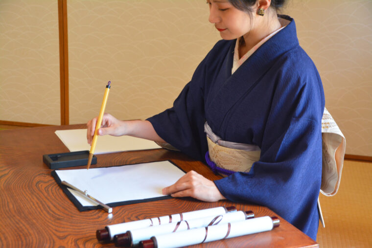
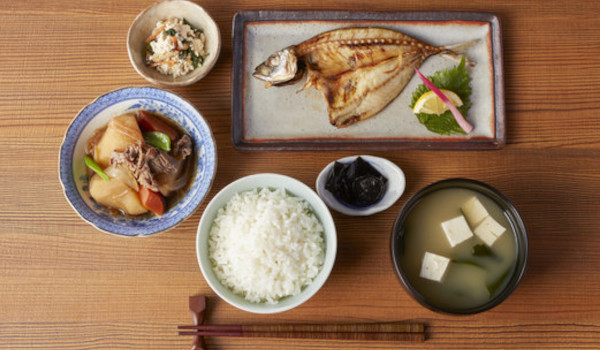
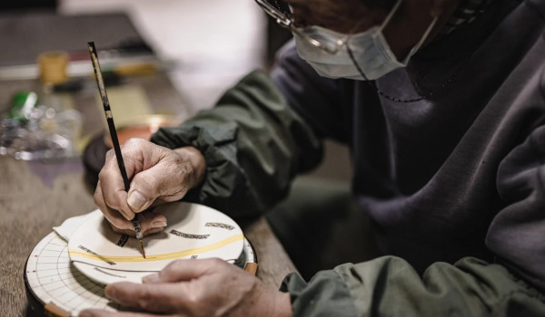
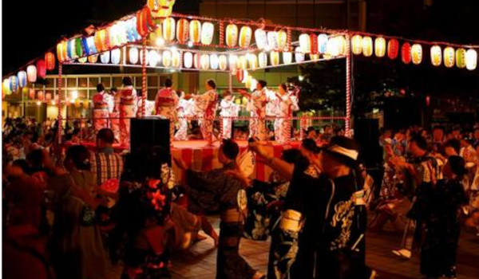

日本の伝統文化
受け継がれる美しさと技、心を伝える日本の文化をご紹介します。
伝統芸術 - 美と表現の世界

日本の芸術文化は、書道・茶道・華道など、静けさと調和を大切にしたものが多くあります。舞台芸術としての能や歌舞伎も、独特の美しさを持っています。
食文化 - 旬を楽しむ味わい

和食は、季節の食材を活かし、五感で楽しむ食文化です。寿司、懐石料理、和菓子など、日本ならではの味わいが受け継がれています。
伝統工芸 - 受け継がれる職人技

陶器や漆器、和紙や織物など、日本の伝統工芸は、細やかな技とこだわりが詰まったものばかりです。一つひとつが職人の手によって生み出されています。
伝統行事 - 季節を彩る祭り

日本には、四季折々の行事があります。お正月やひな祭り、夏祭りやお盆、年末の行事など、古くから続く風習が人々の暮らしを彩ります。